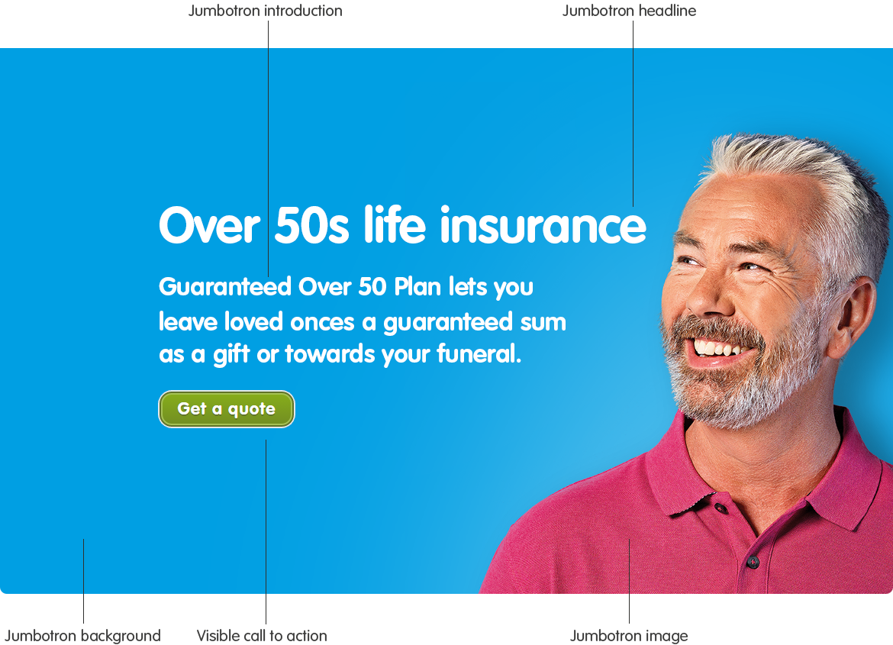

Brand

Supporting


Sunshine
Sunshine is the colour most commonly associated with our brand. Use it to present key messages about our products and services.

Roundels
Roundels are ‘sunshine elements’ and we use them to connect important information to our brand. We use Sunshine for the background of standard roundels and for content on Midnight roundels.
Bubbles
Bubbles are ‘sunshine elements’ and we use them to connect important information to our brand. We use Sunshine for the background of standard bubbles and for content on Midnight bubbles.
Sky
Sky is the second colour commonly associated with our brand. Use it to indicate that an element such as a hyperlink or button is interactive.

Jumbotrons and panels
Use Sky for Jumbotrons and boxes that contain a single, significant call-to-action.
Interactive icons
Sky icons indicate that an item is interactive, for example opening an accordion, downloading a file or printing a page.
Buttons
Sky background buttons indicate primary actions, while Sky outline buttons are used for prominant links.
Video
Use Sky for the background of video animations and poster frames.
Small navigation
Use Sky for the background of small navigation elements including accordion and pagination links.
Form elements
Use Sky for labels, checkboxes and radio buttons within forms.